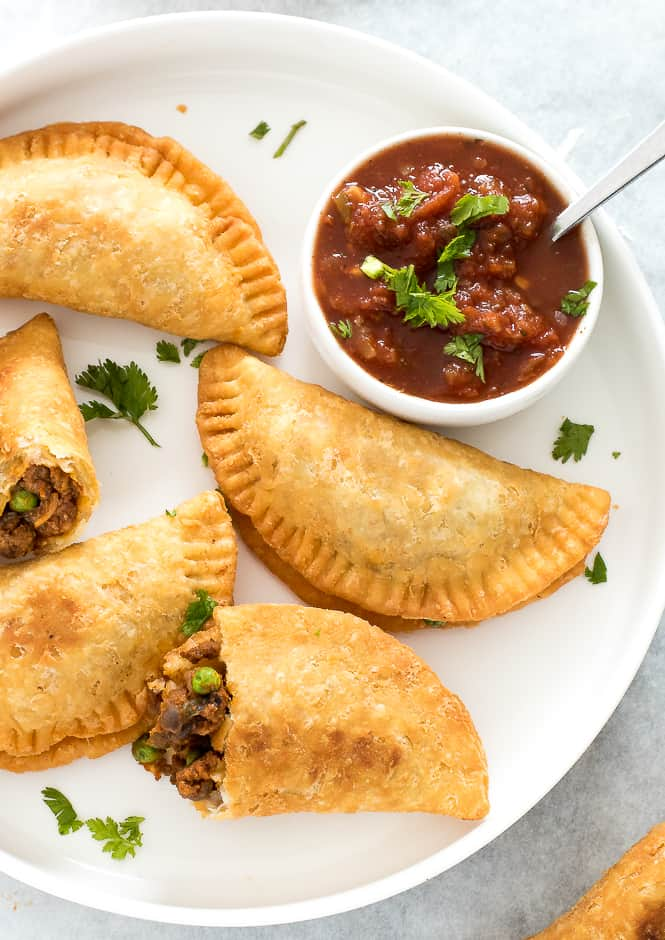

How to make empanadas

Description
There’s nothing like a hot, fresh empanada straight out of the oven!
And this recipe is everything you dream an empanada to be:
golden,
buttery, flaky pastry that’s crispy all over.
Inside, a juicy beef filling with an extra flavour punch from chorizo,
plus the
traditional little bits of chopped egg and olives.
Ingredients:
- Beef
- Potato cubes
- Herb and spices
- Tomato paste
- Tomato passata
- Chicken stock/broth
- Garlic and onion
Steps:
- Spread filling in a half moon shape on one side of the round. Make the surface flat. Use 3 tablespoons of filling (55g / 1.94oz to be exact!), leaving a 1.7cm / 2/3″ border
- Sprinkle with a pinch of olives and egg.
- Brush with egg whites – Brush the filling side edge with egg whites. We’re reserving the yolks to brush the surface so it bakes up beautifully golden.
- Seal – Fold over to enclose filling and press firmly to seal, but don’t squish the pastry and make it thinner – this makes it harder to do neat pleats.